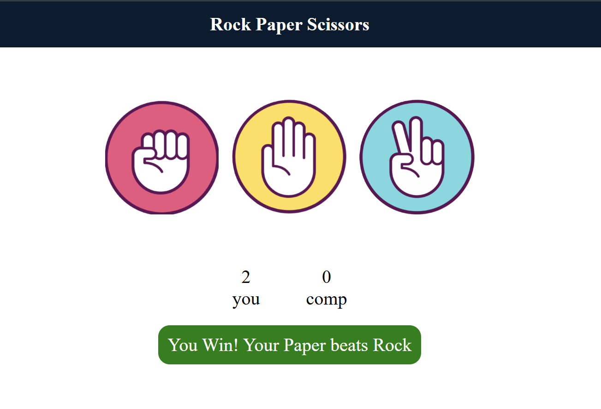
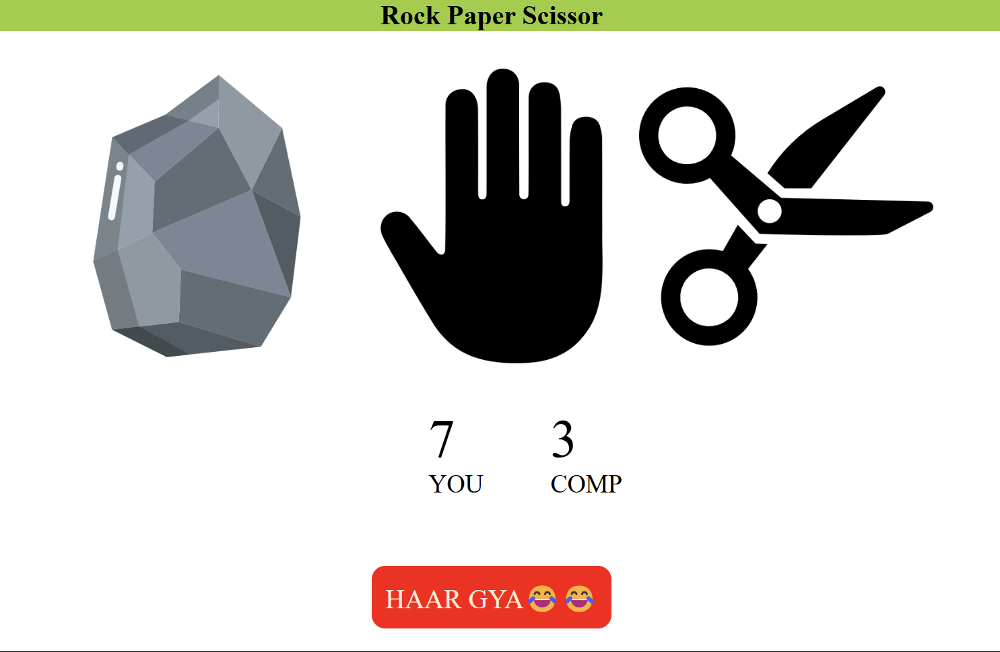
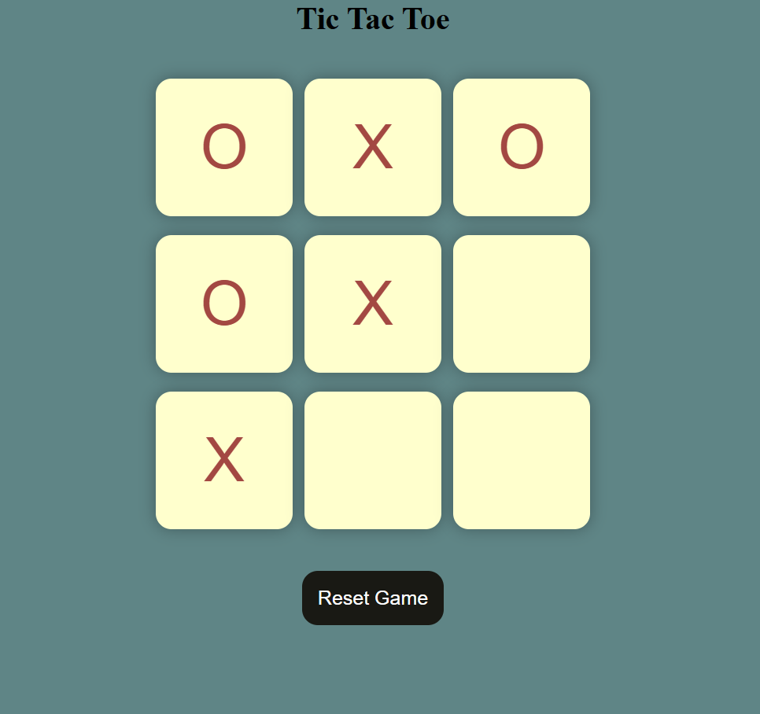
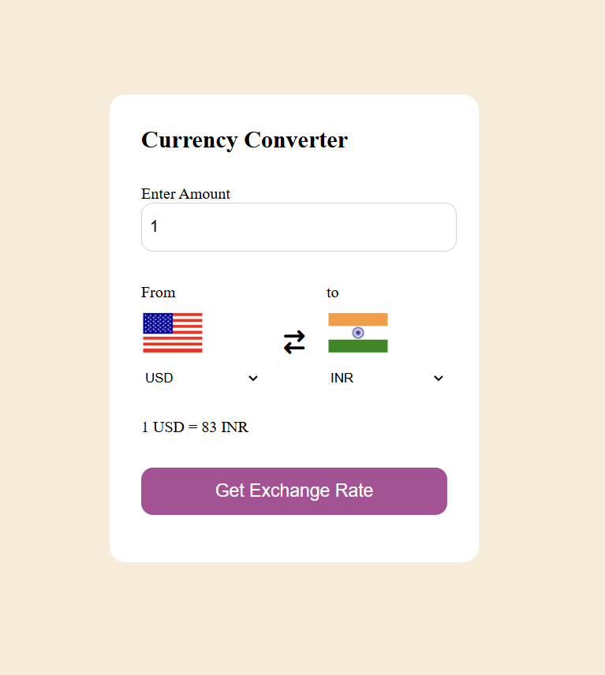

Here are some of the projects I've worked on. Click on the project title to view more details or visit the live demo!

A simple and interactive game that simulates the classic "Rock, Paper, Scissors" battle. Built with [technology used, e.g., HTML/CSS/JavaScript or Python], it features intuitive design, randomized outcomes, and an engaging user experience. Perfect for showcasing logic implementation and UI/UX skills.
View Project
A simple and interactive game that simulates the classic "Rock, Paper, Scissors" battle. Built with [technology used, e.g., HTML/CSS/JavaScript or Python], it features intuitive design, randomized outcomes, and an engaging user experience. Perfect for showcasing logic implementation and UI/UX skills.
View Project
A simple and interactive implementation of the classic Tic Tac Toe game. Built using [mention technologies, e.g., HTML, CSS, JavaScript, Python], it features a clean UI, responsive design, and seamless gameplay for two players. The project demonstrates logic implementation, UI/UX design, and basic game mechanics.
View Project
"Currency Exchange Platform: A seamless and secure solution for exchanging currencies, offering real-time rates, multi-currency support, and user-friendly interfaces for individuals and businesses. Designed for efficiency and reliability to meet global financial needs."
View Project